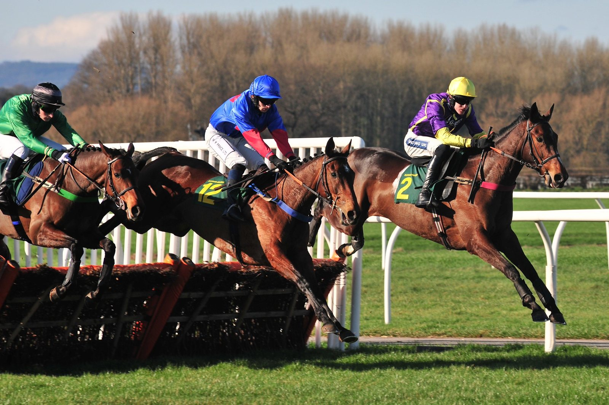

Diamond Street arranca con buen pie en las vallas de Ffos Las
Harry Skelton llevó a Diamond Street a una victoria por tres cuerpos en su estreno sobre obstáculos, en la segunda división de la Dandara Maiden Hurdle, sobre dos millas.

Quickkick, con tres a uno en el mercado y ya rodado, fue el rival que más cerca terminó. Detrás, a otros catorce cuerpos, cruzó Poets Express, cotizado a seis a uno. Diamond Street, ganador previo en una carrera de bumper, nunca había saltado un obstáculo en competición.
La tarde en Gales tenía otro plato fuerte, la carrera de debutantes en obstáculos grandes que ganó Sober Glory, pero la prueba de vallas se adelantó con un estreno que dejó buena impresión. El caballo está preparado por Dan Skelton.
Harry Skelton lo describió en Sky Sports Racing: «Ha sido muy profesional y ha ganado tan bien como uno querría. Es muy emocionante». El jockey explicó que no quiso apretarle demasiado: «Nunca había corrido sobre obstáculos, pero es un caballo muy emocionante». Y añadió sobre su futuro: «Es también muy de chaser, pero tiene muchas cosas a favor».
Hobbs, por su parte, habló del segundo: «El ganador es un buen caballo, Quickkick tiene un buen nivel de habilidad. Ha corrido bien».
El mercado ya se movió. Los patrocinadores recortaron a Diamond Street de 50/1 a 40/1 para la Sky Bet Supreme Novices' Hurdle de Cheltenham, en marzo.
Por Martín Larrañeta